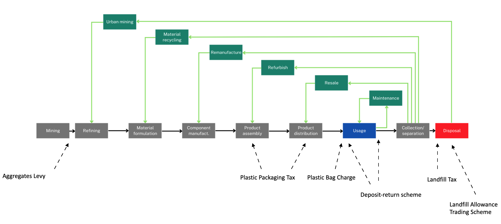

Price and market-based instruments
Summary of findings
How it works and current applications
PMBIs are used in an attempt to achieve a more optimal level of environmental use by reflecting or internalising the true environmental/social costs of production or consumption in market prices (and therefore private cost functions) or alternatively and to the same end, by creating property rights and facilitating the establishment of proxy markets in which to trade these.1

Figure 1. Example of current, historic and prospective UK price and market-based instruments placed in relation to point of introduction along the value-chain.
Administered prices
Administered prices (in some cases referred to as ‘non-market-based economic and fiscal instruments’ UNFCCC, 2014) involve introducing a price where one did not previously exist or modifying an existing price on goods or services to better reflect otherwise externalised social costs in market prices (Pigou, 1920) and in doing so, alter behaviour.2 Sub-types include:
Administered markets
Administered markets work by assigning property rights over an allowable quantity of an environmental use or externality and creating (the mandate or conditions for) a market to trade in these (Coase, 1960; Ellerman 2005). There are also examples of voluntary markets for certain ‘rights’ established in the UK. Sub-types include:
Market-friction reductions and market ordering instruments
The strengthening of liability rules, antitrust/competition enhancing laws and government development of information transaction programmes can be thought about as market-oriented instruments through establishing market order (Bleischwitz, ), countering monopolistic pricing, reducing market transaction costs and bridging information asymmetries. Current applications in the UK include7 the:
Performance
Strategic fit
Tax and charge-based approaches generally have low levels of strategic fit among households. The results of the third OECD Survey on Environmental Policies and Individual Behaviour Change (EPIC) published in the 2023 OECD report ‘How Green is Household Behaviour’ (OECD, 2023) found tax and charge-based approaches were the least supported policy measure by household respondents across domains including food and transport. The tax burden in the UK is project to rise to 37.1% of GDP by 2027-28 (OBR, 2022). While this lack of support may be primarily in relation to their costs, there is also the issue of fairness with price-based instruments being viewed as allowing wealthier actors to buy their way out of responsibility or buying a license to pollute. There is a more nuanced picture across instruments, however. Almost half of respondents to a 2020 YouGov survey supported an increase in the charge on plastic bag from 5p to 10p, which was then subsquently implemened (YouGov, 2020).
For business, taxes may be opposed as these can cost more to regultees than prescriptive regulatory approaches. Markets are generally more politically desirable than taxes - less fear government will abuse the system for revenue generation ends, the polluter pays only for the non-optimal portion of total emissions (though not always) and can feel more in control of a permit system (Pearce and Barbier, 2000).
Reductions in the current tax regime such as on VAT, capital allowances and too subsidies are also least preferred options by government authorities due to reductions in tax receipts and exchequer costs.
Taxation of carbon embodied in traded products is more advanced that embodied materials (as captured by measures of raw material consumption), and has the potential to deliver reductions in resource use, material substitution and an increase in secondary material use, though depends on how taxes are responded to.
Ackerman and Stewart (1988) provide support for the permit trading system arguing for its synonymity with other values of fairness, yet at a time when there was limited experience with how these markets worked, and biased by the successes of the SOx market in California.
Winter (2010) - moral accordance. Argues that the emission target rather redefines the maximum ceiling as an exploitable right. He argues that the ‘cap and trade’ concept has turned a genuinely ecological problem into an economic problem, leading us to lose sight of the ecological purpose of the overall enterprise. Winter suggests that in light of the failures of emissions trading given their lack of achievement and high administration burden, substantial and quick progress is better achieved by fostering new technologies and inducing behavioural change as well as a pragmatic mix of emission and technology standards, subsidies, taxes, voluntary agreements and polycentric governance.
Baldwin (2008) - Whilst recognising the political feasibility of Trading Systems due to it being in the language of trade and appearing non-threatening to firms, credible questions have arisen regarding the efficiency, fairness and transparency of ET. ETS offer no advantage other than that economic. Baldwin argues that contrary to Ackerman and Stewart’s (1988) claim of trading offering democratically accountable approaches to reducing emissions, market based systems have an inherent bias in favour of parties who possess wealth and whilst cost effective do not ensure fairness (OECD, 2002).
Environmental effectiveness
Environemntal effectiveness includes immediacy, scale of impact, predictability/certainty of impact. The effectiveness of PMBIs depends on their ability to alter the economics of production, purchasing and use choices. This, in turn, depends on the level at which they are set and the elasticity of demand for regulated goods/services including abatement costs across regulated subjects influenced also by the relative price of substitutes.
A 2022 study by Wrap ‘UK policy pathways for Increasing Resource Productivity to 2050’ found …, while a study by Cambridge Econometrics building off the same assumptions, found…
Efficiency
A key proposed benefit of PMBIs is that they can help achieve a particular level of environmental use at the lowest overall cost to society (i.e. are most statically efficient) while providing ongoing incentives to bring down abatement costs over time (Pearce, 2002; Johnson, 1999). This is largely said to be enabled through their flexibility, which allows polluters with lower marginal abatement costs to undertake (more) abatement than those with higher MACs (for whom, paying the tax may be more cost effective) in line with the equimarginal principle (Goulder and Parry 2008).
Affordability
The UK government raises over £820 billion a year in receipts, primarily through The income tax, National Insurance contributions (NICs) and value added tax (VAT) which together raise over £470 billion. Environmental taxes make up a relatively small share of this revenue, though nevertheless appear to generate net-revenues for government.
Long-run effects
In theory and where relevant, PMBIs provide continuous incentives for further environmental harm reduction through innovation, commercialization and adoption of technologies which lower aggregate costs, because doing so saves tax expenditures. General economic instruments have been shown to have encouraged diffusion and incremental-type-innovation in the automotive and energy sectors (Bergek and Berggren, 2014).
Administered markets can be superior in this effect because of the incentive to sell permits and not only reduce tax liability. For instance, Calel and Dechezlepretre (2016) found that the EU ETS increased low-carbon innovation by as much as 10% among ‘pollution-light’ firms. At the same time, a lack of immediacy possible due to complications in the mechanism can lead to stalling R&D in industries with high MACs (and in the long-run a less immediate transition to lower-pollution heavy production).
The effectiveness of taxes are contingent on the prices of the taxed good or service (if traded) not going down which would otherwise lessen the effectiveness of prices in signaling change. Long-term cost effectiveness of price vs quantity mechanisms are affected by their responsiveness to change. This can vary in three circumstances: 1) In the presence of rapid rates of economic growth, a fixed tax leads to an increase of aggregate emissions whereas permits can give no allowance to this, but the price of permits increases to account for the enhanced desire for them; 2) In the context of inflation, a unit tax decreases in real terms and so emissions levels increases, whereas with a permit system there is no change in the aggregate; and 3) In the presence of exogenous technological change, a tax system leads to increases in control levels and a decrease in aggregate emissions whilst a permit system maintains emissions with a fall in permit prices.
Distributional effects
Taxes can be regressive i.e. lower income groups may pay higher share of overall income to service them, though depending on revenue recycling models. Callan et al. (2009) found a carbon tax of 20 euros/tCO2 with revenue recycling in Ireland was marginally regressive, though if the tax revenue were used to increase social benefits and tax credits, households across the income distribution would be made better off without exhausting the total carbon tax. Grainger and Kolstad (2009) a Co2 tax would be 4x higher for the lower quintile of US population than upper quintile. However, design is also important. They found this wouldn’t necessarily be the case for a tax such as on gasoline which would be progressive.
Positive and negative spillovers
Spillovers can occur across various materials, regions, and activities. For example, in the UK, the shift towards using “bags for life” highlights this phenomenon. A study by the Environment Agency revealed that these bags must be used at least four times to make them less impactful on climate change compared to single-use plastic bags (BBC, 2022). Similarly, the Aggregates Levy has had cross-border effects between the Republic of Ireland and Northern Ireland due to the lack of a tax on aggregates or primary materials in Ireland (EEA, 2008), although this was somewhat mitigated by the levy credit scheme (ACLS). A 2021 report by the National Audit Office found that the Landfill Tax might have led to an increase in fly-tipping rates. In Wales, the 2016 post-implementation review of the single-use carrier bag charge found that only 13% of eligible firms reported a negative impact on their business. A study of deposit-return systems in 12 cases found no correlation between the introduction of the charge-refund scheme and sales while simultaneously driving an improvement in the quality of recyclate (Packaging Europe, 2023). The OECD (2022) has explored interactions between deposit-return systems and other extended producer responsibility (EPR) mechanisms, noting some potentially negative interactions highlighted by the industry (Packaging Portal, 2023). The MPA has also advocated for the reinstatement of the Aggregates Levy Community Fund (AggBusiness, 2021).
Modelling blueprints
Prospective applications in UK CE framework
PMBIs are considered for nearly all environmental problems raised, however may not work well under every set of circumstances (Stavins, 2003).
Milios (2021) proposes a comprehensive tax framework for the CE should include: (1) a raw material resource tax, (2) reuse/repair tax relief, and (3) a waste hierarchy tax at the end of life of products.
Design and implementation conditions
The effectiveness and efficiency of PMBIs are based on the ‘rational polluter hypothesis’, assuming that regulatees are aware of their marginal costs and benefits and that in response to the instrument, regulatees will switch to less environmentally-intensive production or consumption.
Footnotes
We do not cover here Coasian decentralised bargaining approaches, nor the management of resources or emissions as a currency.↩︎
Pigouvian taxes are a specific form, with the per-unit price of which is equal to its marginal social damage. Pigou (1920) introduced the notion of externalities or costs and benefits not captured in the market price of goods, and proposed that a corrective tax in proportion to the externality could address this market failure↩︎
Differs from fines which are generally applied to uses above or outside that mandated/permitted by regulatory instruments↩︎
Major environmental impacts at the stage of material extraction include the scarring of landscapes and the production of dust and noise impacting environmental amenity values as well as tradeoffs with habitat for other species↩︎
On 13 December 2022, the Council of the EU and the European Parliament reached a provisional agreement on a Regulation establishing a carbon border adjustment mechanism (CBAM), following a 2021 proposal by the Commission↩︎
In the wider context of the EU, taxation of carbon embodied in traded products is more advanced that embodied materials (as captured by measures of raw material consumption) through the proposed CBAM system and has the potential to deliver reductions in resource use, material substitution and an increase in secondary material use though depends on how taxes are responded to and their design.↩︎
Those related to EPR and ‘information markets’ are covered under other respective toolkit briefs↩︎
The tax was introduced with the expectation of being more effective than voluntary measures called for by the aggregates industry at the time.↩︎